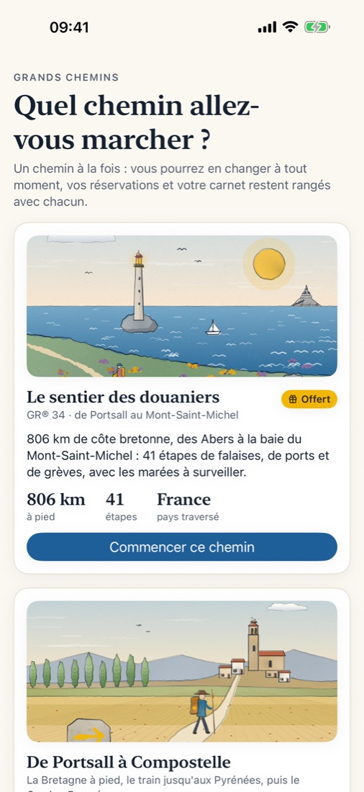
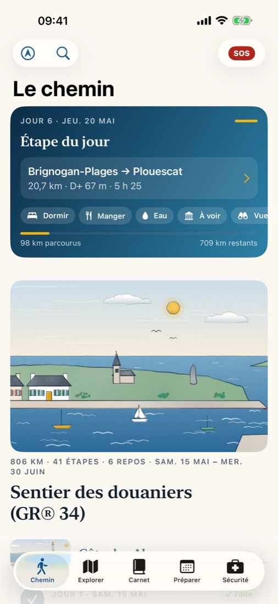
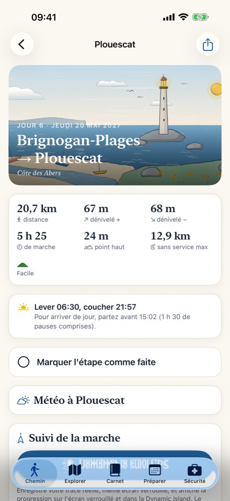
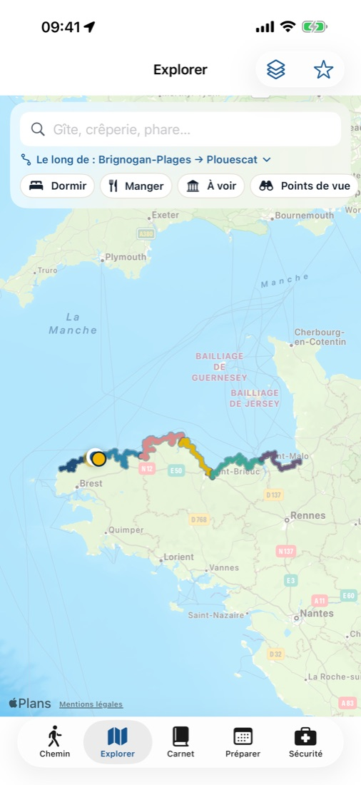
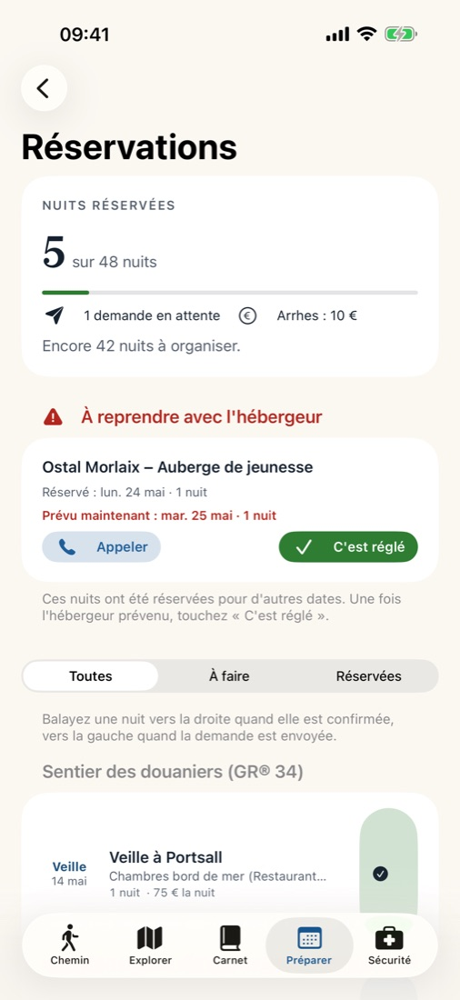
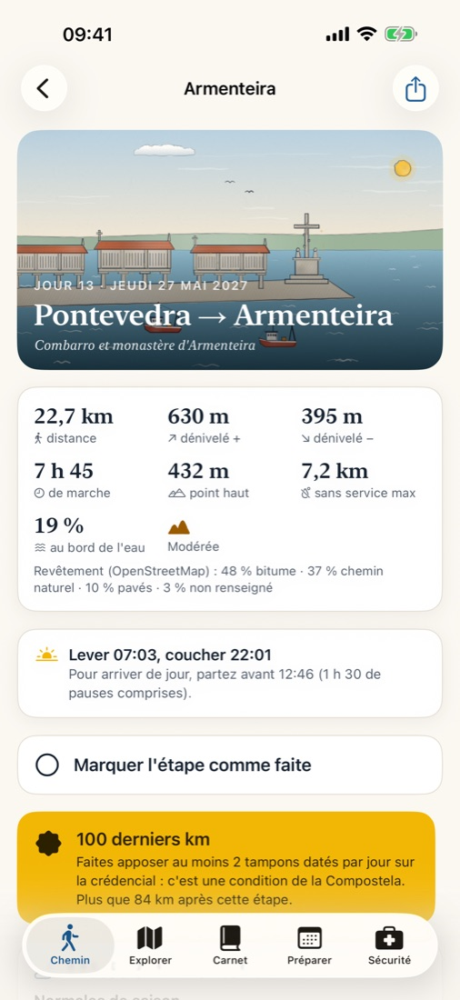

Grands Chemins
Grands CheminsUne application iPhone pour préparer et marcher un grand chemin, de la première idée à l'arrivée : planning daté, étapes, hébergements, réservations, budget, suivi GPS, plan B pour s'arrêter plus tôt, carnet et livre de voyage. Un chemin à la fois, chacun avec ses propres réservations et son propre carnet. L'essentiel fonctionne sans réseau.






Les chemins
- Le sentier des douaniers (GR® 34), de Portsall au Mont-Saint-Michel : 806 km de côte bretonne en 41 étapes. Offert.
- De Portsall à Compostelle : la Bretagne à pied jusqu'à Nantes, le train jusqu'aux Pyrénées, puis le Camino Francés jusqu'à Saint-Jacques. 1 315 km à pied en 64 étapes. Achat intégré.
- De Porto à Compostelle par la côte : la Senda Litoral, le Minho, la côte galicienne et la Variante spirituelle. 314 km en 16 étapes. Achat intégré.
Pour chaque étape
- Distance, dénivelé, durée, profil, tracé hors ligne et export GPX.
- Un hébergement principal et une alternative pour chaque nuit, relevés sur des sources officielles.
- Marées, bacs, points d'eau, ravitaillement, transports, météo, lever et coucher du soleil.
Sans compte, sans publicité, aucune donnée collectée. Robert Oulhen, éditeur individuel.